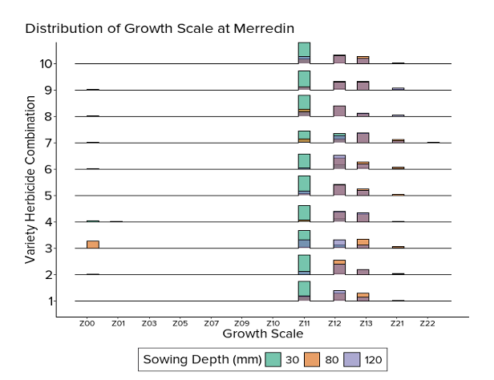
Bayesian Ordinal Regression for Crop Development and Disease Assessment
Zhanglong Cao, Rose Megirian, Matthew Nguyen, Adam Sparks
CBADA - CCDM & EECMS, Curtin University
26/11/2025
Background
Experiments
Objective: evaluating deep sowing of oats in WA production systems
Design: split-plot design at two sites
Sowing depths at 30, 80 and 120 mm
Variety-herbicide combinations: 10 levels
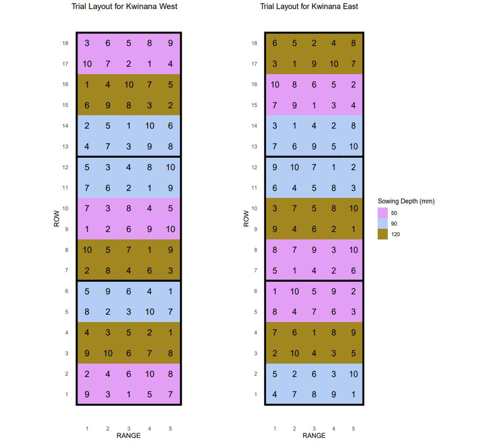
Growth stage data
The growth scale data is measured on an ordinal scale following the Zadoks growth scale measurement methods.
Ten samples were taken from each plot four weeks after sowing.
Zadoks growth scale
The Zadok’s growth scale is based on ten principal cereal growth stages (Zadoks, Chang, and Konzak (1974)):
0 - Germination
1 - Seeding growth
2 - Tillering
3 - Stem elongation
4 - Booting
5 - Awn emergence
6 - Flowering (anthesis)
7 - Milk development
8 - Dough development
9 - Ripening
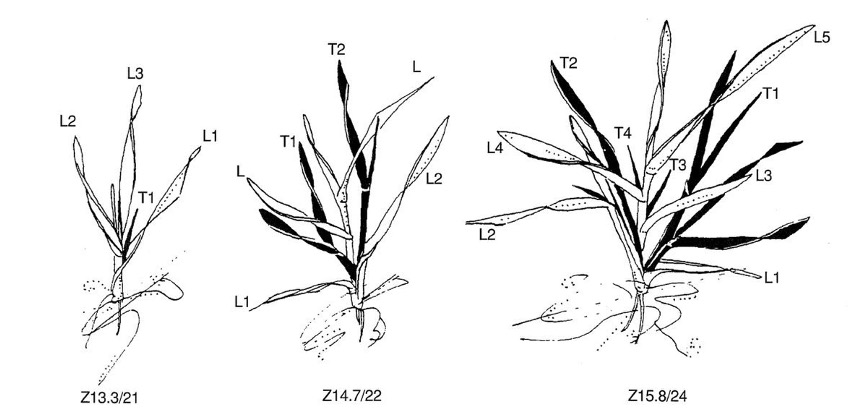
Zadoks growth scale
The Zadok’s growth scale is not chronological time points but a series of ordinal stages.
0 - Germination
00 - Dry seed
01 - Start of water absorption
03 - Seed fully swollen
05 - First root emerged from seed
07 - Coleoptile emerged from seed
09 - First green leaf just at tip of coleoptile
1 - Seedling growth
10 - First leaf through coleoptile
11 - First leaf emerged
12 - Two leaves emerged
13 - Three leaves emerged
14 - Four leaves emerged
15 - Five leaves emerged
16 - Six leaves emerged
17 - Seven leaves emerged
18 - Eight leaves emerged
19 - Nine or more leaves emerged
2 - Tillering
20 - Main stem only
21 - Main stem and one tiller
22 - Main stem and two tillers
23 - Main stem and three tillers
24 - Main stem and four tillers
25 - Main stem and five tillers
26 - Main stem and six tillers
27 - Main stem and seven tillers
28 - Main stem and eight tillers
29 - Main stem and nine or more tillers
Initial data exploration
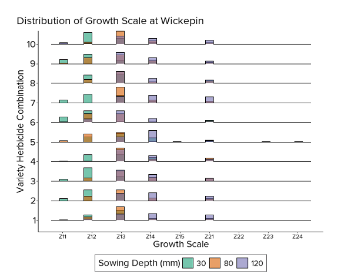
The spatial effect
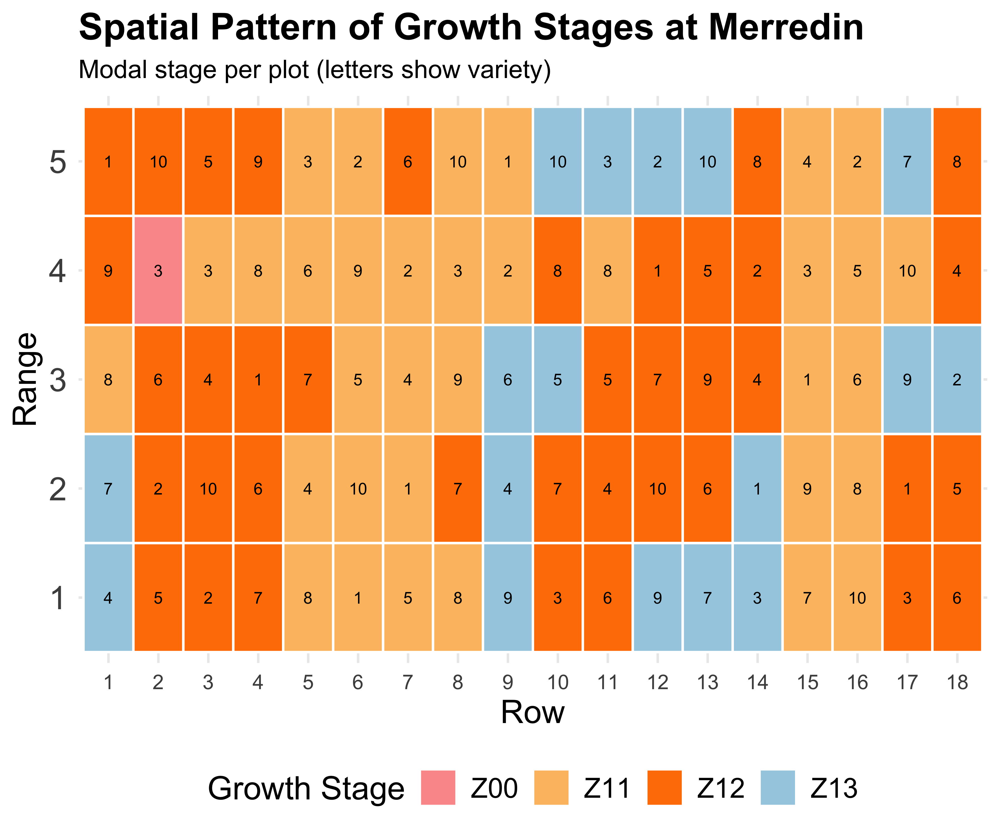
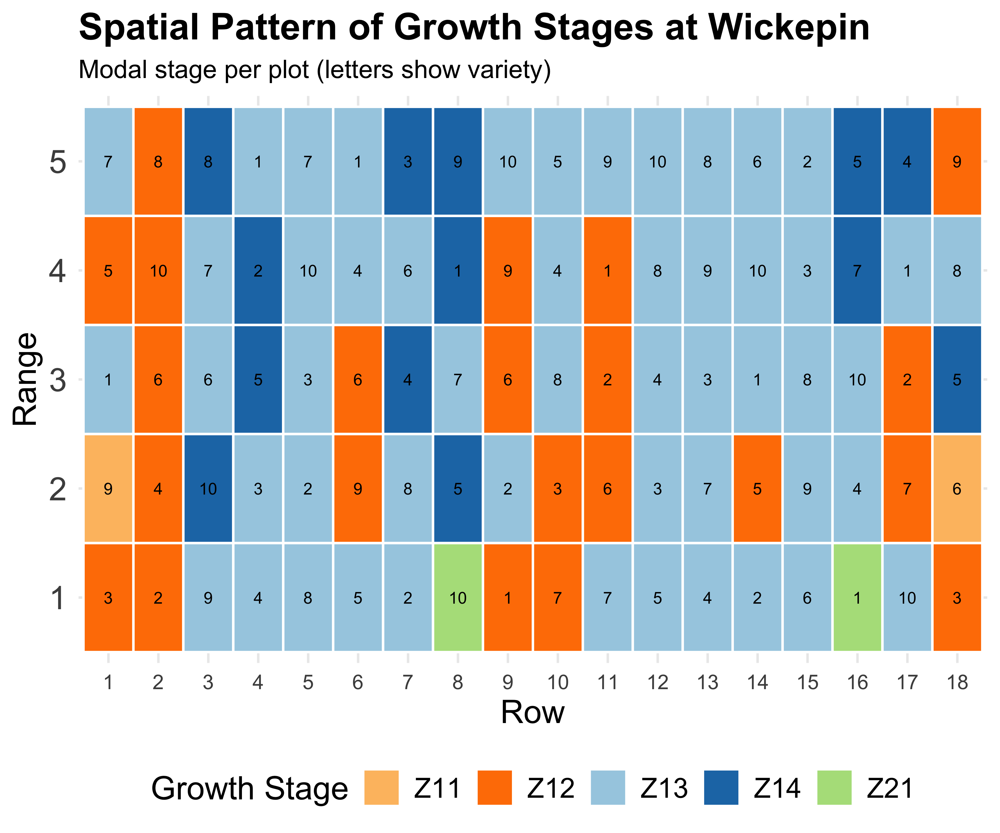
Field trials have spatial gradients
Better estimates → Better decisions
Modelling challenge
Ordinal (not continuous) response
Hierarchical design (plots, sites)
- Multiple plants per plot (pseudo-replication)
Complex interactions
- Treatment effects differ by variety
- Effects differ by growth stage
Spatial correlation
- Field gradients affect growth
Biological interpretability
- Results must inform agronomic decisions
Bayesian approach
rstan
Powerful
brmspackage for Bayesian multilevel models usingrstan(Stan Development Team (2025), Bürkner (2017)).Flexibility: supports a wide range of distributions and link functions, incorporating personalised features, such as spatial effects.
Advanced features: handles missing data, multilevel structures, and more.
Visualisation: offers extensive plotting capabilities for model diagnostics and results.
Choosing the right ordinal model
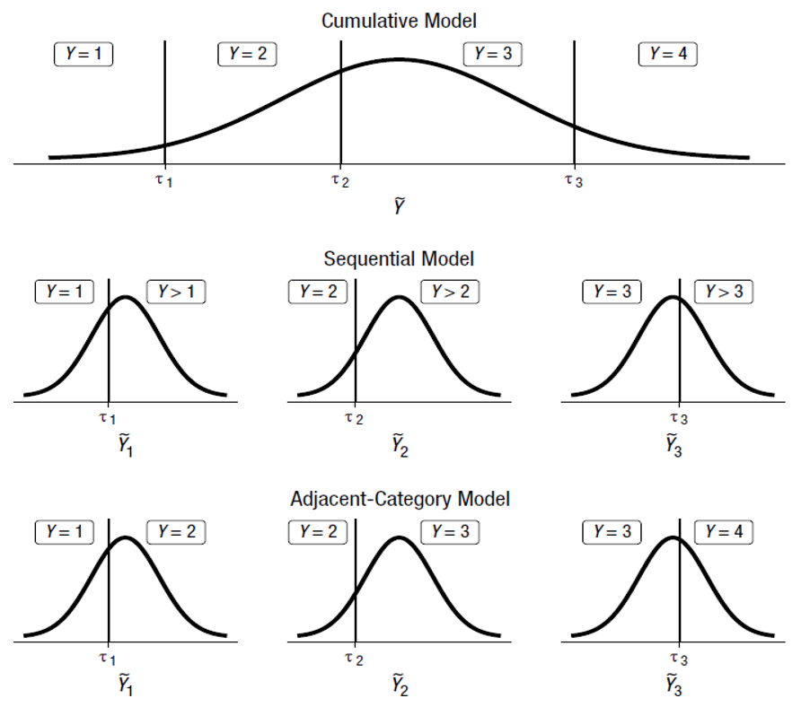Source: Bürkner and Vuorre (2019)
Why sequential model
Sequential model logic
Plant at stage \(k\) asks: “Do I advance to \(k+1\)?”
\[P(\text{advance to } k+1 | \text{currently at } k)\]
For Z13 → Z21 transition:
“Does this plant develop its first tiller?”
Treatment effects = changes in advancement probability!
This directly answers: “Does shallow sowing ACCELERATE development?” ⏱️
Why not cumulative?
Cumulative models: \(P(Y \leq k)\)
“Probability of being at or below stage k”
Problem: Doesn’t capture the sequential progression through development!
- Can’t isolate specific transitions
- Harder to interpret biologically
- Doesn’t match how plants actually develop
Bayesian hierarchical model
\[ \begin{split} &Y_i \in \{Z00, Z01, \ldots, Z24\} \\ &\eta_{k,i} = \alpha_k + \boldsymbol\beta_k^\top \mathbf{x}_i + u_{\text{Plot}[i]} + u_{\text{Depth}[i]|\text{Plot}[i]} + f(\mathbf{s}_i) \\ &P(Y_i \geq k \mid Y_i \geq k-1) = \text{logit}^{-1}(\eta_{k,i}) \\ &u_{\text{Plot}} \sim N(0, \sigma_p^2) \\ &u_{\text{Depth|Plot}} \sim N(0, \sigma_d^2) \\ &f \sim \text{GP}(\mathbf{0}, \Sigma_s) \quad \text{(optional)}. \end{split} \]
\(\alpha_k, \beta_k\) are category-specific (vary by growth stage)
Captures how sowing depth affects different developmental transitions differently
Hierarchical structure accounts for plot and treatment effects
Bayesian workflow
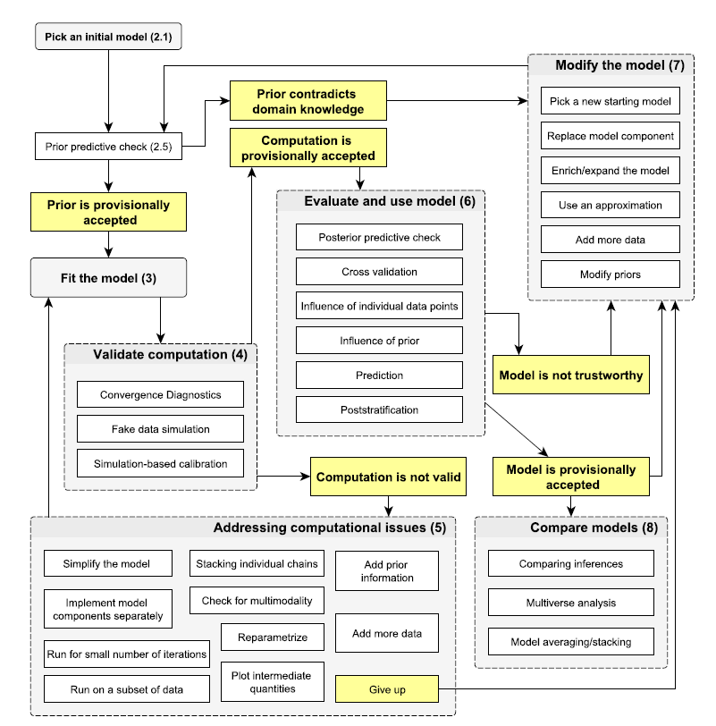
(source: Gelman et al. (2020))
No-U-Turn sampler (NUTS)
(source:https://github.com/chi-feng)
Leave-one-out (LOO) cross validation
In Bayesian statistics, the expected \(\log\) LOO predictive density (ELPD) is used to measure the predictive accuracy : \[ \mbox{elpd} = \sum_{i=1}^{n}\log p(y_i\mid y_{-i}), \] where \(p(y_i \mid y_{-i}) = \int p(y_i \mid \theta)p(\theta \mid y_{-i})d\theta\) is the LOO predictive density with the \(i\)-th observation omitted from the data set (Vehtari, Gelman, and Gabry (2017)).
Bürkner, Gabry, and Vehtari (2021) proposed approximated LOO CV, which uses only a single model fit and calculating the pointwise \(\log\) predictive density as a fast approximation to the exact LOO CV (Cao et al. (2022)).
Results: Merredin Data
Model comparison
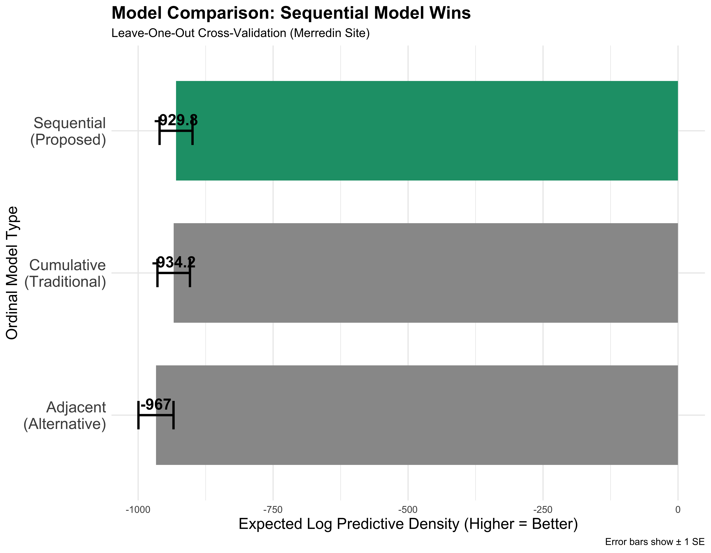
Winner: Sequential for Better ELPD + biologically interpretable!
- Cumulative (proportional odds)
- Models: \(P(Y \leq k)\)
- Interpretation: “At or below stage \(k\)”
- Sequential (continuation ratio) ✅
- Models: \(P(Y \leq k | Y \leq k-1)\)
- Interpretation: “Advance to next stage”
- Adjacent-category
- Models: \(P(Y = k \mid Y \in \{k, k+1\})\)
- Interpretation: “Adjacent stage ratios”
Model diagnostics
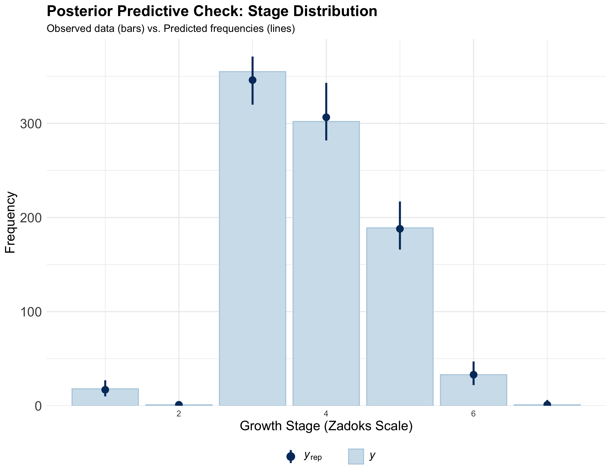
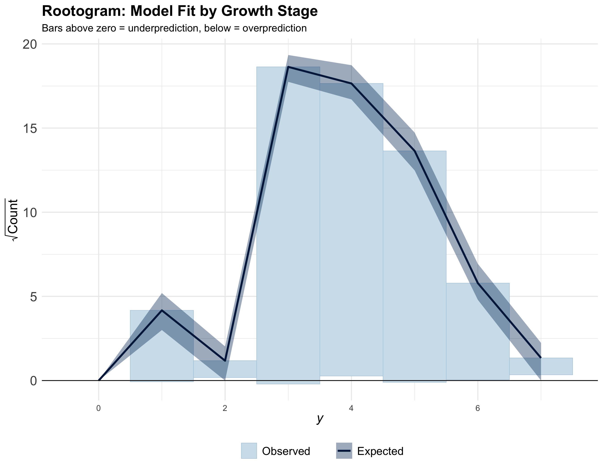
Also refer to Cao et al. (2022) for detailed diagnostics.
Results
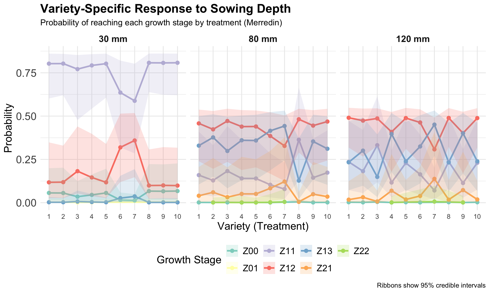Variety-specific response by sowing depth (Merredin); ribbons show 95% credible intervals.
Results
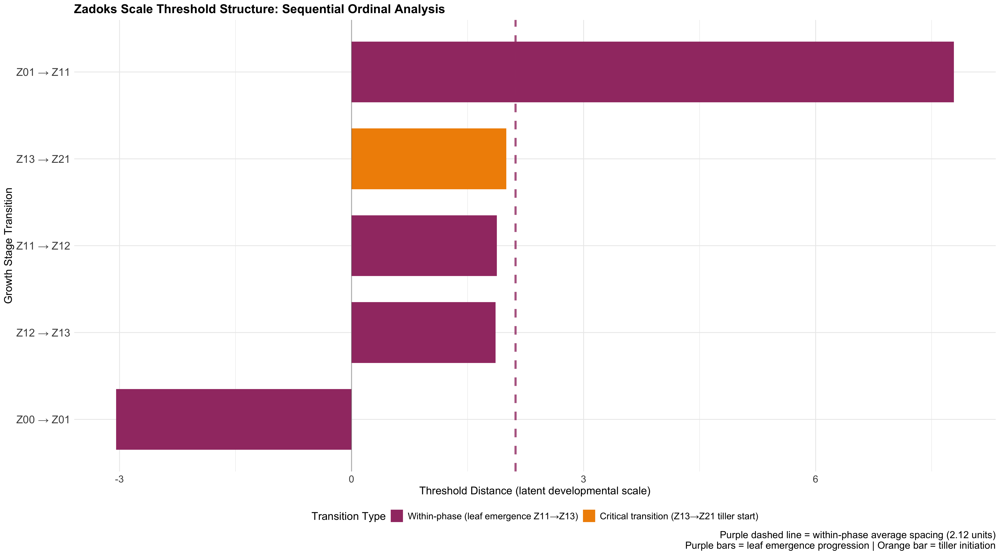What this shows:
- Clear threshold between seed emerge (Z01) and leaf development (Z11). This explains why sowing depth affects it most strongly!
Site consistency
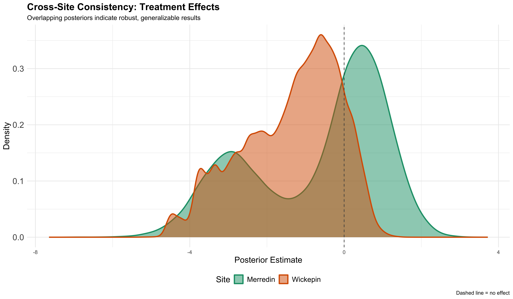Treatment effects comparison across Merredin and Wickepin
Extension: disease severity
The same framework works for disease assessment!
Powdery mildew (0-9 scale)
Fusarium head blight severity
Leaf rust infection scores
Root health ratings
Why sequential model?
Disease progression is also sequential:
Healthy -> Mild -> Moderate -> Severe -> Very Severe
“Does treatment prevent advancement to next severity level?”
Same logic as growth stages! 🌱→🦠
AI integration
Current workflow:
- Manual field assessment
- Record growth stage visually
- Enter data manually
- Analyse
- Generate recommendations
Limitations:
Labour intensive
Subjective scoring
Limited temporal resolution
Can’t scale to whole fields
2026 vision: automated system
- Drone imagery of entire field (done!)
- Computer vision classifies growth stage/diesea score (in progress)
- Real-time Bayesian updating (in progress)
- Automatic recommendations to farmer (plan)
Advantages:
✅ Continuous monitoring
✅ Objective classification
✅ Whole-field coverage
✅ Early intervention possible
Bayesian advantages
First time buying:
- Prior: “Nice houses cost ~$500k” (market knowledge)
- Data: Visit 10 houses
- Posterior: “Actually $550-600k” (updated belief)
Second time buying:
- Prior: $550-600k (your posterior becomes the prior!)
- Data: Visit more houses
- Posterior: “Trending toward $650k” (continuously refined)
Take-Home Messages
Growth stages are ordinal - respect the structure! Don’t use linear models.
Sequential models match biology - plants progress through stages, model should too.
Bayesian inference answers real questions - not just p-values, actual probabilities.
Spatial correlation matters - field trials need spatial structure in models.
Framework is general - works for growth stages, disease severity, any other ordinal outcome.
Ready for precision agriculture - principled statistics + AI = future of agronomy.
Acknowledgments
People:
- Rose Megirian
- Matthew Nguyen
- Professor Adam Sparks
- All Growers


Funding & Support: 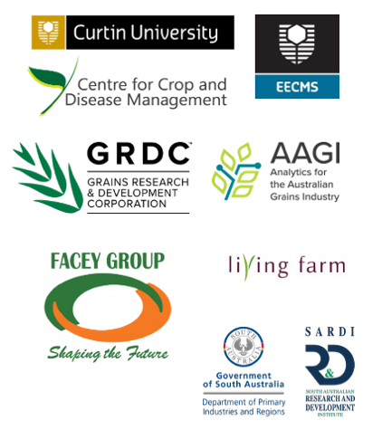

Bürkner, Paul-Christian. 2017. “Brms: An r Package for Bayesian Multilevel Models Using Stan.” Journal of Statistical Software 80 (1): 1–28. https://doi.org/10.18637/jss.v080.i01.
Bürkner, Paul-Christian, Jonah Gabry, and Aki Vehtari. 2021. “Efficient Leave-One-Out Cross-Validation for Bayesian Non-Factorized Normal and Student-t Models.” Comput Stat 36 (2): 1243–61. https://doi.org/10.1007/s00180-020-01045-4.
Bürkner, Paul-Christian, and Matti Vuorre. 2019. “Ordinal Regression Models in Psychology: A Tutorial.” Advances in Methods and Practices in Psychological Science 2 (1): 77–101.
Cao, Zhanglong, Katia Stefanova, Mark Gibberd, and Suman Rakshit. 2022. “Bayesian Inference of Spatially Correlated Random Parameters for on-Farm Experiment.” Field Crops Research 281: 108477.
Gelman, Andrew, Aki Vehtari, Daniel Simpson, Charles C Margossian, Bob Carpenter, Yuling Yao, Lauren Kennedy, Jonah Gabry, Paul-Christian Bürkner, and Martin Modrák. 2020. “Bayesian Workflow.” arXiv Preprint arXiv:2011.01808.
Stan Development Team. 2025. “RStan: The R Interface to Stan.” https://mc-stan.org/.
Vehtari, Aki, Andrew Gelman, and Jonah Gabry. 2017. “Practical Bayesian Model Evaluation Using Leave-One-Out Cross-Validation and WAIC.” Stat Comput 27 (5): 1413–32. https://doi.org/10.1007/s11222-016-9696-4.
Zadoks, J. C., T. T. Chang, and C. F. Konzak. 1974. “A Decimal Code for the Growth Stages of Cereals.” Weed Research 14 (6): 415–21. https://doi.org/10.1111/j.1365-3180.1974.tb01084.x.
IBS2025 Biometrics in the Bush Capital | Z. Cao et al.